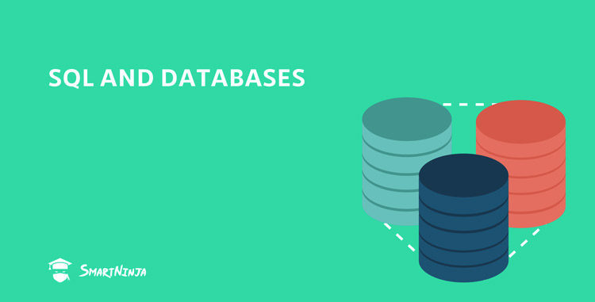

Adatbázis rendszerek
Dr.Kovács László
Kredit: 5
Tematika
- Adatkezelés alapfogalmai, adatstruktúrák, perzisztencia (file, táblázat, adatbázis)
- VBA programozás Excelben, OOP modell, adatkezelési algoritmusok
- Adatbáziskezelés alapjai, ER/EER/UML modellek
- Relációs adatmodell, integritási feltételek, ER → relációs modell, SQL DDL
- Relációs algebra, SQL DML/DQL alapok (szelekció, projekció, join, aggregáció stb.)
- SQL SELECT alapelemek, al-SELECT kezelés, kapcsolódás relációs algebrához
- SQL speciális függvények, tranzakciók, VIEW mechanizmus
- Adatmodellezési problémák, anomáliák, normálformák, normalizálás
- DBMS fizikai architektúra, tárolás, indexelés (B-fa)
- Adatbázisok védelmi modelljei: DAC, MAC, SQL biztonsági parancsok
- MySQL esettanulmány: architektúra, adminisztráció, alap SQL parancsok
- SQLite esettanulmány: architektúra, adminisztráció, SQL áttekintés
- Oracle APEX esettanulmány: architektúra, adminisztráció, SQL áttekintés
- Összefoglalás
